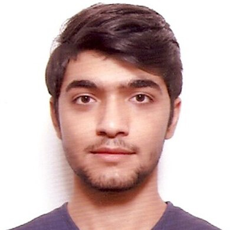

|
GitHub Account LinkedIn Account Personal Mail Address  |
|
ADDRESSPERSONAL
Born Nationality 2018 - Continuing 2014 - 2018 PROFFESIONAL EXPERIENCES
Languages OTHER INFORMATION
Social Comminities Social Activities |
Konya Food and Agriculture University Department of Computer Engineering
Işıklar Mah. Yeğenoğlu Cad. Orkun St. 25/5 42080 Selçuklu/Konya Ertan Osman ALABAY 07.11.2000 Selçuklu/KONYA Turkey Bachelor of Science, Computer Engineer (CGPA: 2.38 / 4.00). Food and Agriculture University, Konya Turkey (2018-continuing). Konya Mehmet-Hanife Yapıcı Anadolu Lisesi Internship as an Computer Engineer in ANADOLU BİRLİK HOLDİNG at KONYA SUGAR FACTORY Information Technologies Department, Intern SAP/Abap programming and Basic Network
As a computer engineer, I like to follow the developments in programming languages. I am trying to run a project that I have made in other programming languages. I want to have information about every subject by taking courses from sub-branches of computer engineering such as cyber security, python and Unity from online education sites. I love hanging out with my friends and playing football. I read at least 2 books a month. These books are usually philosophy, history or Turkish classics. I am trying to learn German on my own. |